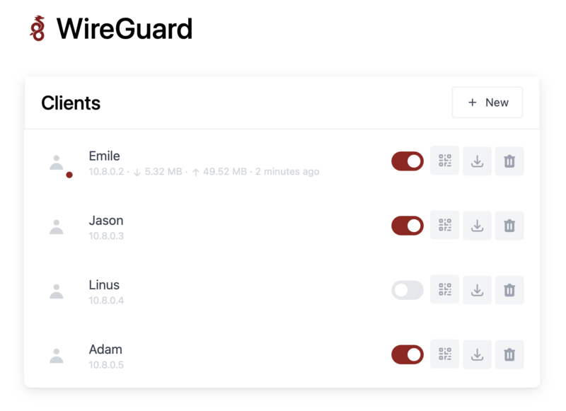

Wireguard es mi VPN favorita. Rápida, ligera,… pero es cierto que no es fácil de instalar y administrarla. Emile Nijssen nos trae un servicio fantástico que soluciona este problema.
Por un lado nos instala Wireguard mediante docker. Después, crea una página de administración donde poder gestionar todos los clientes, extraer el código QR,…

Vamos a ver las características:
Características
51820.85.midominio.duckdns.org, cambialo por la url de tu servidorversion: "3.8"
services:
wg-easy:
environment:
# ⚠️ Required:
# Change this to your host's public address
- WG_HOST=midominio.duckdns.org
# Optional:
# - PASSWORD=foobar123
# - WG_PORT=51820
# - WG_DEFAULT_ADDRESS=10.8.0.x
# - WG_DEFAULT_DNS=1.1.1.1
image: weejewel/wg-easy
container_name: wg-easy
volumes:
- .:/etc/wireguard
ports:
- "51820:51820/udp"
- "85:51821/tcp"
restart: unless-stopped
cap_add:
- NET_ADMIN
- SYS_MODULE
sysctls:
- net.ipv4.conf.all.src_valid_mark=1
Opciones
Estas opciones se pueden configurar en docker-compose.yml debajo environment.
| Env | Defecto | Ejemplo | Descripción |
|---|---|---|---|
PASSWORD |
- | foobar123 |
Cuando se establece, requiere una contraseña al iniciar sesión |
WG_HOST |
- | vpn.myserver.com |
Url del host público |
WG_PORT |
51820 |
51820 |
puerto UDP del servidor Wireguard |
WG_DEFAULT_ADDRESS |
10.8.0.x |
10.6.0.x |
Rango de IP's de clientes |
WG_DEFAULT_DNS |
1.1.1.1 |
8.8.8.8, 8.8.4.4 |
DNS del servidor Wireguard |
Establece una contraseña de interfaz de usuario web, quitando los comentarios =PASSWORD==foobar123 y cambiando la contraseña.
Publicado por Angel el Friday 28 May del 2021
También te puede interesar:
Powered by org-bash-blog
Written in OrgMode with Emacs and converted to HTML with Pandoc

Este obra está bajo una licencia de Creative Commons Reconocimiento-NoComercial-CompartirIgual 4.0 Internacional.